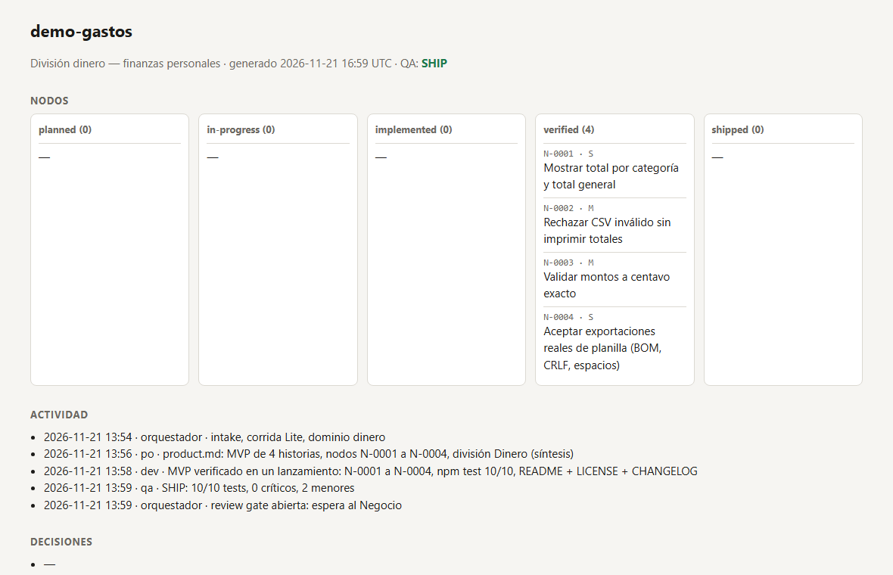

Claude Code · brainloom-claude · MIT
Una fábrica de software hecha de subagents: Product Owner, Tech Lead, Dev y QA. Construye de punta a punta y se detiene una sola vez, en la review gate, para que vos decidas.
> /factory CLI en Node que lee un CSV de gastos (fecha,categoria,monto) y muestra el total por categoría y el total general, para freelancers que llevan sus cuentas en planillas. Stack impuesto: Node 20, cero dependencias.
La corrida, paso a paso
Nada de esto es un mockup: son las líneas del log y los archivos que la fábrica dejó en examples/demo-gastos.
; y salida JSON (V2)1e3, 0x10, 12,50, categoría __proto__: todo rechazado con número de línea, sin total.Medido, no estimado
La versión 0.3 corría siempre el circuito completo. Desde la 0.4, lo que entra en un slice va por la corrida Lite.
Qué miden estas cifras: los tokens que Claude Code reporta por subagent, una corrida de cada versión. No incluyen al orquestador, que todavía no está medido. En la corrida Lite el PO usó haiku (41.341 tokens); medido aparte en sonnet, que es como quedó configurado, usó 16.274. El README trae el comando para medir una corrida completa en tu máquina.
Review gate
; con coma decimal y salida JSON.; y coma decimal ya en el MVP? Recomendado: sí, es lo que exporta Excel en español. 2) ¿Rechazar montos negativos? Recomendado: aceptarlos en V1.$ node src/cli.js examples/gastos.csv Comida 20.00 Software 49.00 Transporte 3.30 Total 72.30 $ npm test ℹ pass 10 ℹ fail 0

board.mjs al llegar a la gate, a partir del brain y del log.Quién hace qué
siempre
Spec, backlog con corte MVP de hasta 4 historias y roadmap. Los nodos del brain los genera un script desde su tabla.
corrida Full
Stack, arquitectura y slices. También entra cuando el Dev queda bloqueado tras tres intentos distintos.
Full con interfaz
Flujos, pantallas, tokens visuales y criterios de usabilidad que QA puede comprobar.
siempre
Construye fino, corre lo que construyó y cierra nodos con evidencia. Si no entra en un slice, pide pasar a Full.
siempre
No arregla: intenta refutar. Entrega SHIP o NO-SHIP con evidencia y la lista de lo que no probó.
la casa
Nada está hecho sin un comando corrido. Lo que no sale se degrada con deuda explícita: nunca se esconde.
Instalar
Todo queda dentro de .claude/ del proyecto. Requisito: Node.
$ git clone https://github.com/fedesauzzadev/software-factory-claude $ node software-factory-claude/install.mjs ./mi-proyecto
- uses: actions/checkout@v4 - uses: fedesauzzadev/software-factory-claude@main
Después, en Claude Code dentro del proyecto: /factory <tu requerimiento>. Sin argumentos muestra el estado. Hay un workflow listo para copiar que instala y commitea.